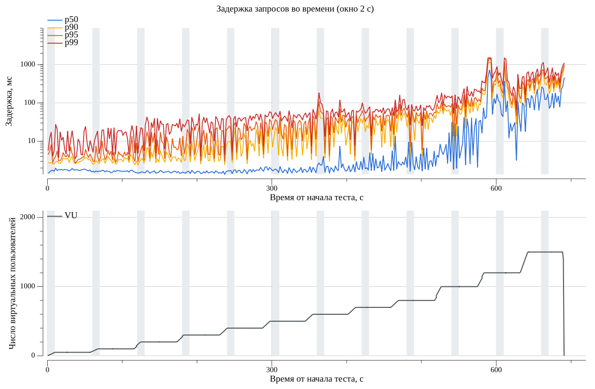
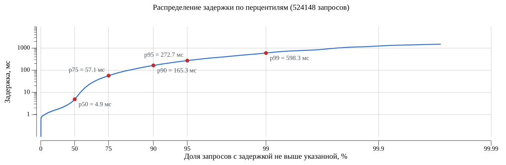
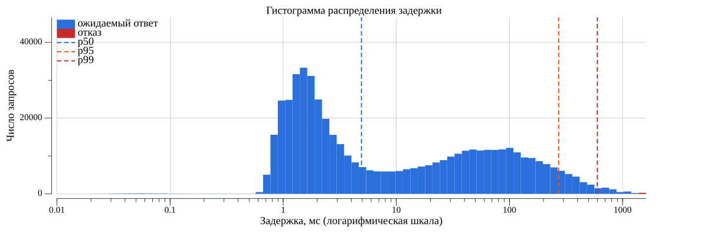
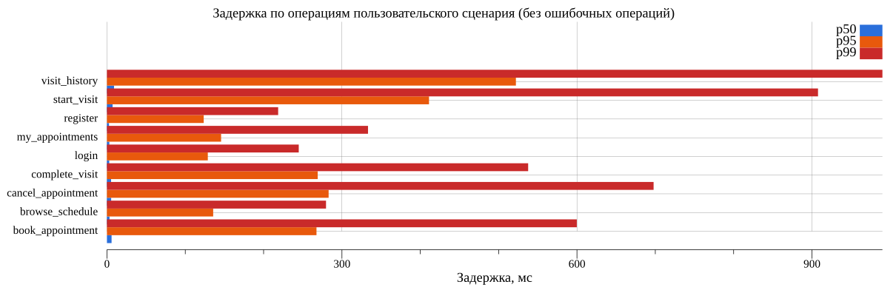
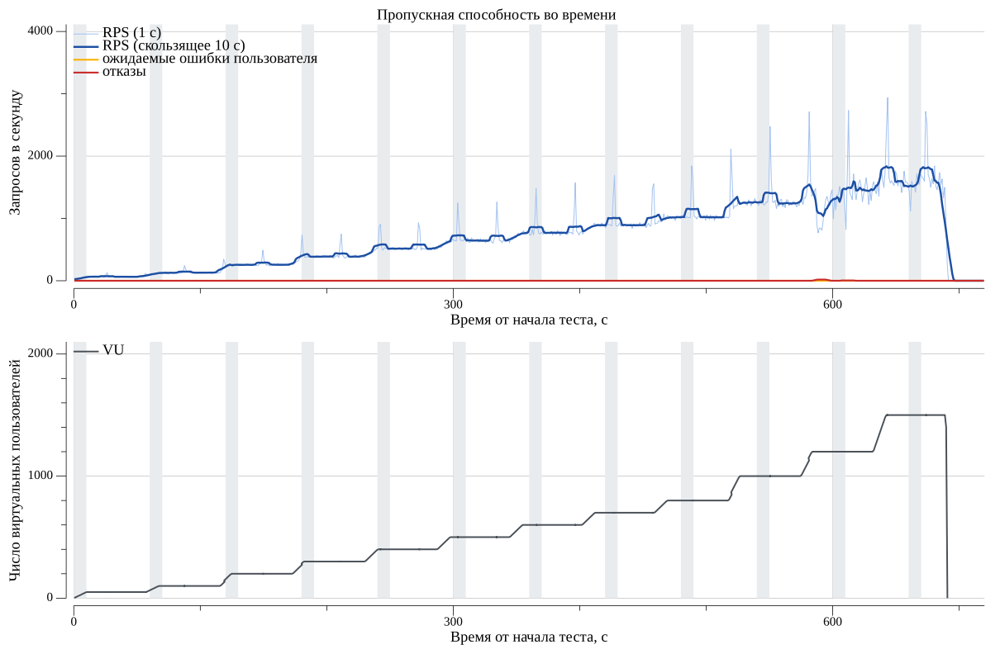
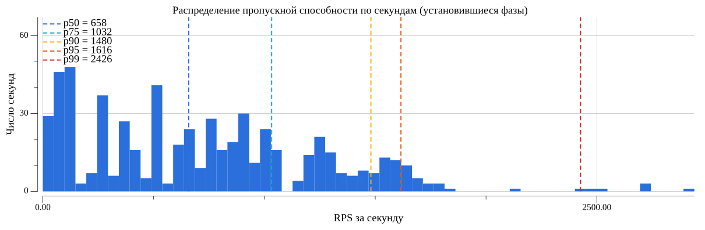
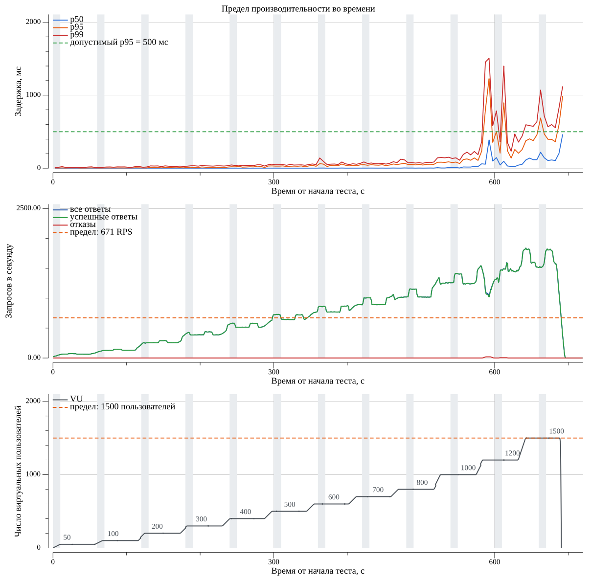
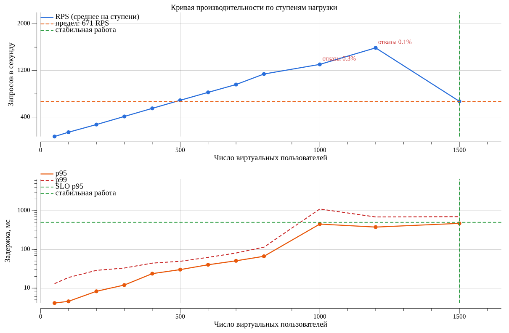
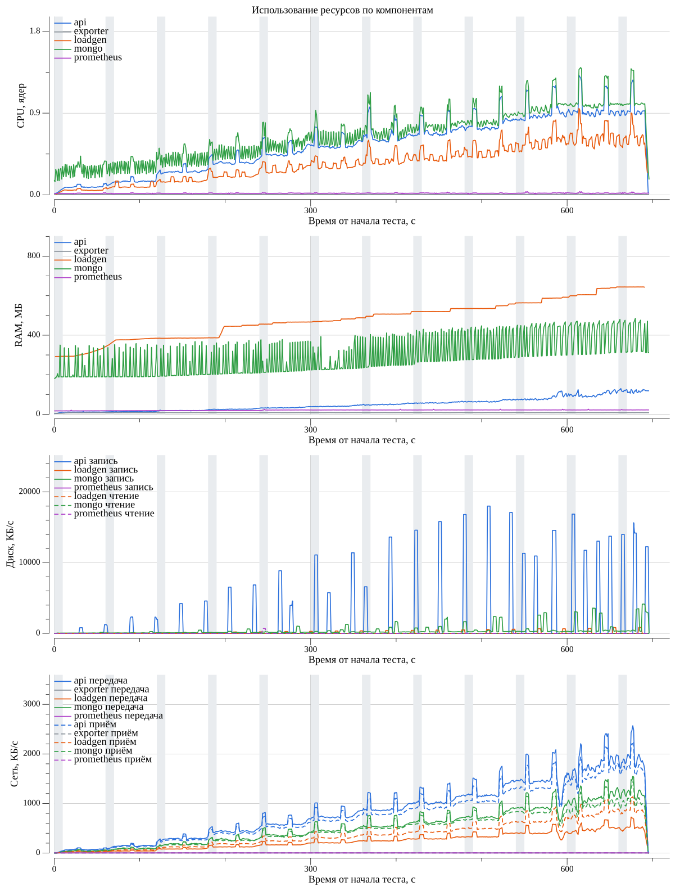

Ступенчатое увеличение нагрузки
Запросов524148
RPS среднее / медиана728 / 668
p50 / p95 задержки4.92 / 273 мс
p99 задержки598 мс
Отказы0.05%
Ошибочные операции0.00%
Стабильная работа до 1500 VU (~671 RPS). Нарушение SLO начинается с не найдена в пределах теста. Максимальная пропускная способность 1588 RPS при 1200 VU.
Задержка
| Задержка, мс | count | min | mean | p50 | p75 | p90 | p95 | p99 | max |
|---|---|---|---|---|---|---|---|---|---|
| Все запросы | 524148 | -1388 | 56.5 | 4.92 | 57.1 | 165 | 273 | 598 | 1593 |
| Корректные операции | 524148 | -1388 | 56.5 | 4.92 | 57.1 | 165 | 273 | 598 | 1593 |
| Ошибочные операции | 0 | — | — | — | — | — | — | — | — |



Операции пользовательского сценария
| Операция | count | min | mean | p50 | p75 | p90 | p95 | p99 | max | Отказы | Ошибочные |
|---|---|---|---|---|---|---|---|---|---|---|---|
| book_appointment | 76021 | 0.02 | 61.9 | 5.92 | 71.1 | 206 | 268 | 600 | 1005 | 0.00% | 0.00% |
| browse_schedule | 76181 | 0.03 | 31.9 | 3.28 | 41.8 | 101 | 136 | 280 | 608 | 0.00% | 0.00% |
| cancel_appointment | 22623 | 0.02 | 63.0 | 5.40 | 68.7 | 207 | 283 | 698 | 1039 | 0.00% | 0.00% |
| complete_visit | 53014 | 0.03 | 59.0 | 5.29 | 66.7 | 196 | 269 | 538 | 1030 | 0.00% | 0.00% |
| login | 76207 | 0.02 | 30.0 | 2.93 | 39.6 | 95.7 | 129 | 245 | 599 | 0.00% | 0.00% |
| my_appointments | 75926 | 0.03 | 33.4 | 3.05 | 41.6 | 107 | 146 | 333 | 677 | 0.00% | 0.00% |
| register | 15752 | -1247 | 27.7 | 2.63 | 36.6 | 88.2 | 124 | 219 | 608 | 0.00% | 0.00% |
| start_visit | 53145 | 0.03 | 90.6 | 7.22 | 96.2 | 310 | 411 | 908 | 1373 | 0.00% | 0.00% |
| visit_history | 75279 | -1388 | 104 | 9.07 | 104 | 344 | 522 | 990 | 1593 | 0.35% | 0.00% |

Пропускная способность
| Показатель | count | min | mean | p50 | p75 | p90 | p95 | p99 | max |
|---|---|---|---|---|---|---|---|---|---|
| RPS за секунду | 720 | 0.00 | 728 | 668 | 1042 | 1480 | 1614 | 2059 | 2939 |


Фазы нагрузки
| Участок | VU | RPS ср. | RPS p50 | RPS p5 | p50 мс | p95 мс | p99 мс | Отказы | CPU api | CPU mongo | RAM api, МБ | SLO |
|---|---|---|---|---|---|---|---|---|---|---|---|---|
| разгон до 50 | 50 | 36.1 | 39.0 | 8.15 | 1.64 | 3.54 | 13.2 | 0.00% | 0.04 | 0.23 | 6.72 | да |
| 50 VU | 50 | 68.5 | 64.0 | 58.0 | 1.78 | 4.11 | 13.0 | 0.00% | 0.09 | 0.28 | 11.1 | да |
| разгон до 100 | 100 | 116 | 116 | 94.9 | 1.63 | 3.46 | 11.9 | 0.00% | 0.12 | 0.29 | 12.4 | да |
| 100 VU | 100 | 142 | 130 | 119 | 1.63 | 4.56 | 18.8 | 0.00% | 0.15 | 0.32 | 13.0 | да |
| разгон до 200 | 200 | 249 | 251 | 224 | 1.53 | 4.31 | 15.5 | 0.00% | 0.24 | 0.39 | 17.8 | да |
| 200 VU | 200 | 273 | 260 | 241 | 1.57 | 8.28 | 28.7 | 0.00% | 0.26 | 0.40 | 18.8 | да |
| разгон до 300 | 300 | 426 | 386 | 377 | 1.56 | 12.8 | 30.2 | 0.00% | 0.38 | 0.51 | 24.4 | да |
| 300 VU | 300 | 412 | 391 | 371 | 1.53 | 12.0 | 33.0 | 0.00% | 0.37 | 0.48 | 25.8 | да |
| разгон до 400 | 400 | 589 | 520 | 497 | 1.65 | 20.0 | 41.2 | 0.00% | 0.51 | 0.62 | 31.9 | да |
| 400 VU | 400 | 551 | 525 | 495 | 1.73 | 23.6 | 44.2 | 0.00% | 0.48 | 0.57 | 33.6 | да |
| разгон до 500 | 500 | 737 | 650 | 638 | 1.72 | 29.1 | 48.0 | 0.00% | 0.62 | 0.71 | 38.6 | да |
| 500 VU | 500 | 689 | 661 | 609 | 1.70 | 30.0 | 49.2 | 0.00% | 0.55 | 0.62 | 41.4 | да |
| разгон до 600 | 600 | 867 | 771 | 732 | 2.68 | 59.0 | 114 | 0.00% | 0.76 | 0.85 | 47.3 | да |
| 600 VU | 600 | 825 | 790 | 738 | 1.91 | 40.1 | 62.3 | 0.00% | 0.64 | 0.71 | 50.6 | да |
| разгон до 700 | 700 | 1014 | 896 | 862 | 2.04 | 45.2 | 72.7 | 0.00% | 0.72 | 0.80 | 56.1 | да |
| 700 VU | 700 | 959 | 920 | 874 | 2.33 | 50.7 | 80.5 | 0.00% | 0.72 | 0.78 | 59.0 | да |
| разгон до 800 | 800 | 1168 | 1026 | 1010 | 2.67 | 51.8 | 76.8 | 0.00% | 0.76 | 0.82 | 63.4 | да |
| 800 VU | 800 | 1140 | 1040 | 990 | 3.04 | 66.4 | 114 | 0.00% | 0.80 | 0.86 | 67.2 | да |
| разгон до 1000 | 1000 | 1268 | 1260 | 1213 | 9.98 | 81.8 | 139 | 0.00% | 0.83 | 0.89 | 74.9 | да |
| 1000 VU | 1000 | 1304 | 1268 | 844 | 32.8 | 450 | 1103 | 0.33% | 0.93 | 1.01 | 84.6 | да |
| разгон до 1200 | 1200 | 1311 | 1354 | 1062 | 87.9 | 377 | 666 | 0.00% | 0.91 | 0.99 | 95.9 | да |
| 1200 VU | 1200 | 1588 | 1564 | 1276 | 77.4 | 377 | 688 | 0.07% | 0.96 | 1.05 | 102 | да |
| разгон до 1500 | 1500 | 1520 | 1538 | 1256 | 172 | 593 | 873 | 0.00% | 0.90 | 1.00 | 121 | нет |
| 1500 VU | 1500 | 671 | 0.00 | 0.00 | 126 | 469 | 700 | 0.00% | 0.84 | 0.96 | 116 | да |
Поиск предела производительности


Использование ресурсов
| Компонент | Метрика | min | max | mean | median | p95 |
|---|---|---|---|---|---|---|
| api | CPU, ядер | 0.01 | 1.32 | 0.56 | 0.59 | 0.94 |
| api | Троттлинг CPU, с/с | 0.00 | 0.38 | 0.03 | 0.00 | 0.17 |
| api | Чтение с диска, КБ/с | 0.00 | 0.00 | 0.00 | 0.00 | 0.00 |
| api | Запись на диск, КБ/с | 0.00 | 18008 | 1777 | 0.00 | 14011 |
| api | RAM (working set), МБ | 3.01 | 130 | 49.3 | 42.8 | 115 |
| api | Сеть, приём КБ/с | 0.07 | 2250 | 779 | 743 | 1741 |
| api | Сеть, передача КБ/с | 0.08 | 2569 | 864 | 815 | 1917 |
| api | Процессы и потоки | 7.00 | 18.0 | 9.11 | 9.00 | 10.0 |
| exporter | CPU, ядер | 0.00 | 0.01 | 0.00 | 0.00 | 0.01 |
| exporter | Троттлинг CPU, с/с | 0.00 | 0.00 | 0.00 | 0.00 | 0.00 |
| exporter | Чтение с диска, КБ/с | 0.00 | 0.00 | 0.00 | 0.00 | 0.00 |
| exporter | Запись на диск, КБ/с | 0.00 | 0.00 | 0.00 | 0.00 | 0.00 |
| exporter | RAM (working set), МБ | 3.39 | 8.16 | 7.80 | 7.88 | 8.14 |
| exporter | Сеть, приём КБ/с | 0.48 | 0.68 | 0.50 | 0.48 | 0.66 |
| exporter | Сеть, передача КБ/с | 3.22 | 5.71 | 4.23 | 4.06 | 5.61 |
| exporter | Процессы и потоки | 4.00 | 6.00 | 5.66 | 6.00 | 6.00 |
| loadgen | CPU, ядер | 0.00 | 0.95 | 0.35 | 0.35 | 0.67 |
| loadgen | Троттлинг CPU, с/с | 0.00 | 0.00 | 0.00 | 0.00 | 0.00 |
| loadgen | Чтение с диска, КБ/с | 0.00 | 2.00 | 0.01 | 0.00 | 0.00 |
| loadgen | Запись на диск, КБ/с | 0.00 | 838 | 51.0 | 0.00 | 473 |
| loadgen | RAM (working set), МБ | 292 | 645 | 481 | 482 | 640 |
| loadgen | Сеть, приём КБ/с | 1.34 | 1136 | 376 | 357 | 858 |
| loadgen | Сеть, передача КБ/с | 1.12 | 726 | 243 | 237 | 518 |
| loadgen | Процессы и потоки | 7.00 | 9.00 | 8.66 | 9.00 | 9.00 |
| mongo | CPU, ядер | 0.15 | 1.40 | 0.66 | 0.68 | 1.01 |
| mongo | Троттлинг CPU, с/с | 0.01 | 1.24 | 0.30 | 0.22 | 0.87 |
| mongo | Чтение с диска, КБ/с | 0.00 | 60.0 | 0.36 | 0.00 | 0.00 |
| mongo | Запись на диск, КБ/с | 1.00 | 4153 | 420 | 199 | 2374 |
| mongo | RAM (working set), МБ | 181 | 485 | 295 | 276 | 459 |
| mongo | Сеть, приём КБ/с | 0.11 | 1437 | 490 | 469 | 1062 |
| mongo | Сеть, передача КБ/с | 0.07 | 1548 | 536 | 509 | 1213 |
| mongo | Процессы и потоки | 39.0 | 153 | 93.8 | 81.5 | 148 |
| prometheus | CPU, ядер | 0.01 | 0.04 | 0.02 | 0.02 | 0.02 |
| prometheus | Троттлинг CPU, с/с | 0.00 | 0.00 | 0.00 | 0.00 | 0.00 |
| prometheus | Чтение с диска, КБ/с | 0.00 | 713 | 4.09 | 0.00 | 0.00 |
| prometheus | Запись на диск, КБ/с | 0.00 | 6.00 | 0.63 | 0.00 | 4.43 |
| prometheus | RAM (working set), МБ | 16.7 | 25.7 | 20.4 | 21.5 | 21.9 |
| prometheus | Сеть, приём КБ/с | 3.44 | 5.71 | 4.23 | 4.06 | 5.61 |
| prometheus | Сеть, передача КБ/с | 0.48 | 0.70 | 0.51 | 0.48 | 0.67 |
| prometheus | Процессы и потоки | 8.00 | 14.0 | 8.07 | 8.00 | 8.00 |

Коды ответов
| Код | Запросов |
|---|---|
| 200 | 378965 |
| 201 | 144918 |
| 500 | 265 |
Окружение прогона
| Компонент | Логические CPU | Квота CPU | Резерв RAM, МБ | Лимит RAM, МБ | Образ | ID образа |
|---|---|---|---|---|---|---|
| api | 0,1 | 1 | 512 | 512 | vitaline-lab6-api:20261124-224410-ramp-so4y | 34bab9a88d5d |
| exporter | 6,7 | — | 64 | 64 | vitaline-lab4-exporter:1 | 5d8e679d55a3 |
| loadgen | 4,5 | — | 2048 | 2048 | grafana/k6:1.3.0 | 3ddc8b1a33a2 |
| mongo | 2,3 | 1 | 1024 | 1024 | mongo:7 | 41e8195b2791 |
| prometheus | 6,7 | — | 768 | 768 | prom/prometheus:v3.5.0 | 63805ebb8d2b |